20+ years, 50+ projects and a 5,000+ workforce — shown the way developers judge a contractor: live progress, cycle speed, safety, people, equipment and quality.
Sample data Figures, quotes and photos on this page marked “Sample” are illustrative examples for the demo — to be replaced with B&B’s real records.
Illustrative stock — not a B&B site · Photo: Biswarup Ganguly, CC BY 3.0
01 · Live project tracker
On site, right now
Every active B&B site, updated monthly: progress, floors cast and a photo from each month. Shown here with sample sites. Sample sites
On scheduleSample data
Twin Residential Towers
Thanisandra, North Bangalore · Mivan · 2 towers · G+28
68%complete
19 / 28floors cast
Last update ·
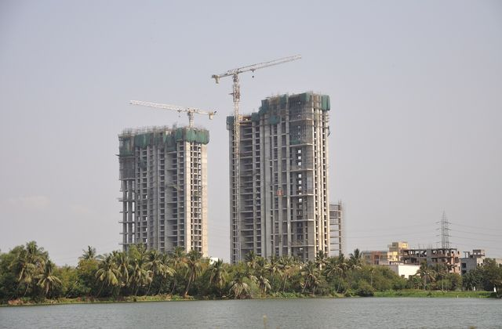
Jul ’26
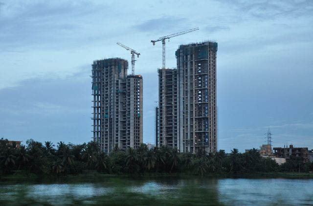
Aug ’26
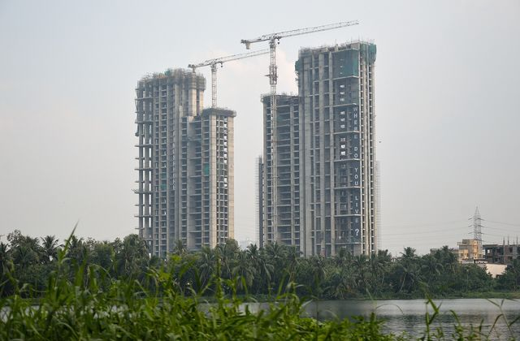
Sep ’26
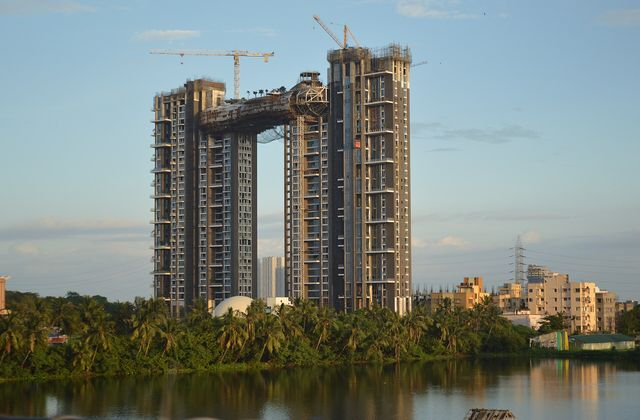
Oct ’26
Illustrative photos Stock imagery — not this site. Photos: Biswarup Ganguly / Saad Akhtar / WTF Formwork, Wikimedia Commons (CC BY / BY-SA).
Illustrative photos Stock imagery — not this site. Photos: Biswarup Ganguly / Saad Akhtar / WTF Formwork, Wikimedia Commons (CC BY / BY-SA).
Early structureSample data
High-rise Residential Tower
Whitefield, Bangalore East · Mivan · 1 tower · G+18
31%complete
6 / 18floors cast
Last update ·
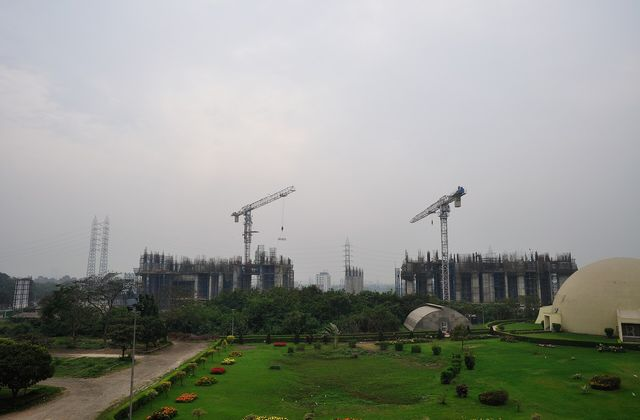
Jul ’26
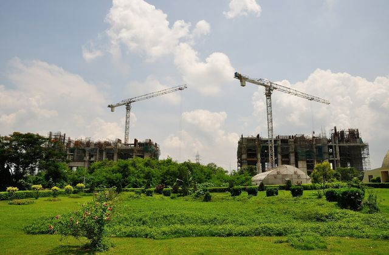
Aug ’26
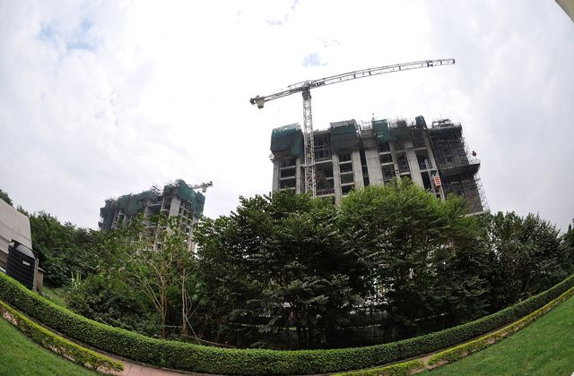
Sep ’26
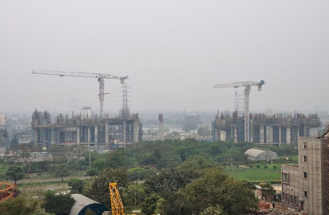
Oct ’26
Illustrative photos Stock imagery — not this site. Photos: Biswarup Ganguly / Saad Akhtar / WTF Formwork, Wikimedia Commons (CC BY / BY-SA).
02 · Mivan speed
A floor every seven days
Aluminium formwork casts walls and slabs together in one repeating cycle — the reason Mivan towers rise in months, not years. Sample data
7
Day floor cycle
per floor, wall + slab
Sample data
96%
Towers on time
structure handed over to plan
Sample data
4.2M
Sq ft delivered
Mivan structure, cumulative
Sample data
28
Towers in Mivan
residential high-rises
Sample data
Mivan vs conventional
With conventional formwork, every floor is shuttered, cast and de-shuttered piece by piece. Mivan panels move up as a complete set — so the cycle is predictable, the finish is true, and plastering is largely avoided.
Indicative, for illustration only. Actual cycle depends on floor plate, crew and design — B&B’s real numbers to be supplied.
03 · Safety record
Everyone goes home
With 5,000+ people on our sites, safety is the first measure of how well we build.
595
Accident-free days
Across all active sites, counted since 1 Mar 2025 Sample data
48,000
Safety training hours · FY 2025–26
Sample data
1,200+
Toolbox talks a year
Sample data
99.2%
PPE compliance at gate audits
Sample data
0.08
Lost-time injury frequency rate
Sample data
PPE, every person, every shift
Helmets, harnesses, safety shoes and high-visibility vests issued and checked at the gate.
Daily toolbox talks
A ten-minute briefing before work: the day’s hazards, the method, who to call.
Edge protection & safety nets
Perimeter barricading, cantilever nets and covered shafts on every Mivan floor.
Scaffold & formwork inspection
Tagged inspections before use; Mivan panels and props checked each cycle.
Permit-to-work
Written permits for hot work, work at height, lifting and electrical isolation.
First aid & medical cover
Trained first-aiders on every site, tie-ups with nearby hospitals, on-call ambulance.
Certifications
ISO 45001
Occupational health & safety
Certification to confirm
ISO 9001
Quality management
Certification to confirm
ISO 14001
Environmental management
Certification to confirm
Certificate logos and numbers shown only once B&B confirms them — do not publish placeholders.
04 · Before / after & time-lapse
Watch a tower go up
Drag the handle to compare the same skyline before and after the structure. B&B’s own site photography will replace this stock series. Illustrative photos
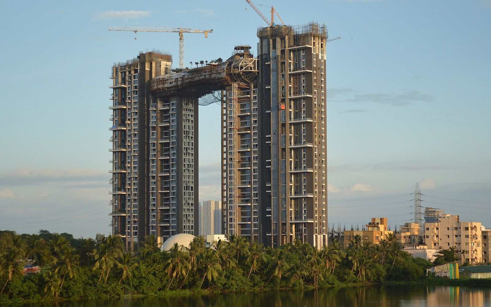
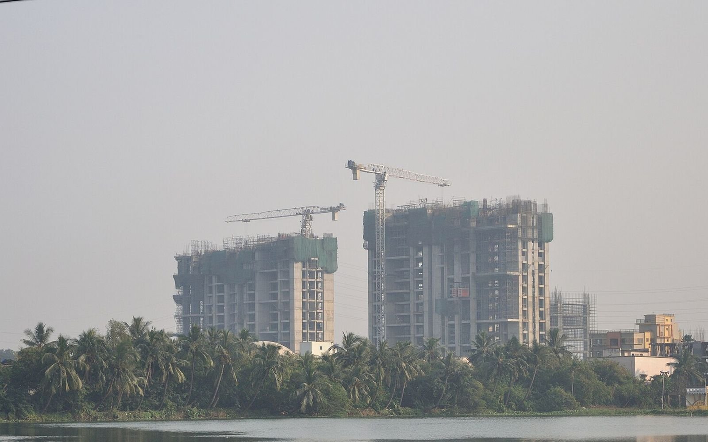
Before · Dec 2013After · Sep 2016
Illustrative photos
Illustrative stock — Forum Atmosphere, Kolkata (not a B&B project). Photos: Biswarup Ganguly, Wikimedia Commons, CC BY 3.0.
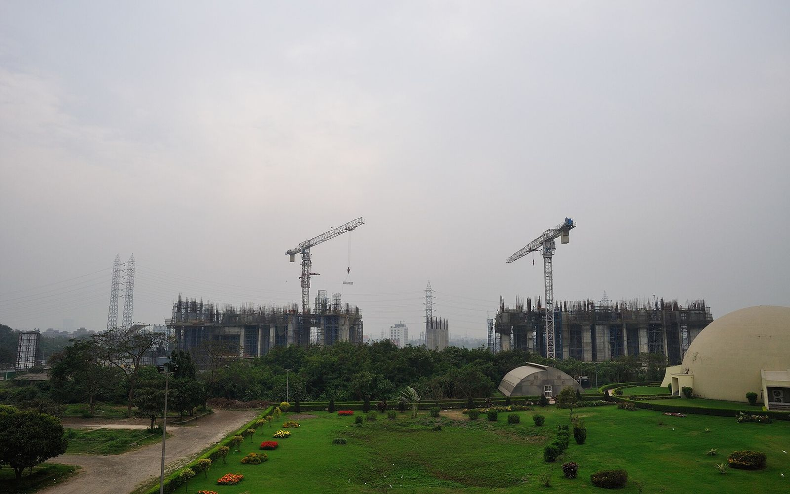
Feb 2013 Site cleared, cranes up
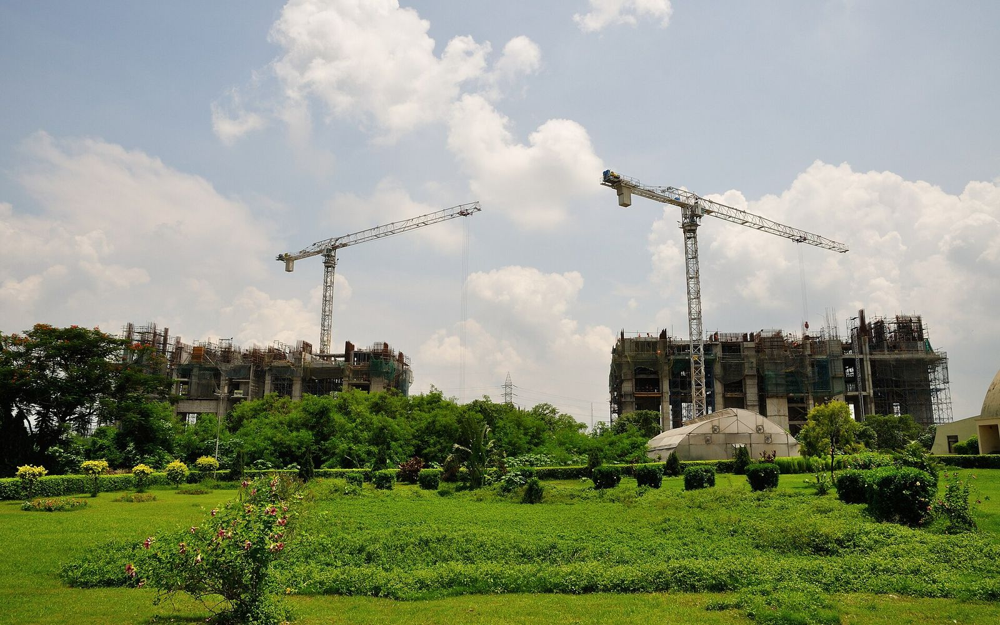
Jun 2013 Podium & first floors
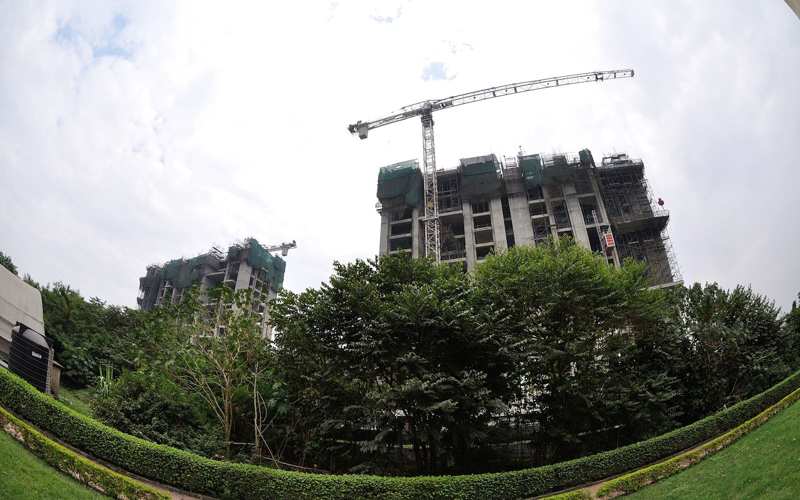
Nov 2013 Core rising
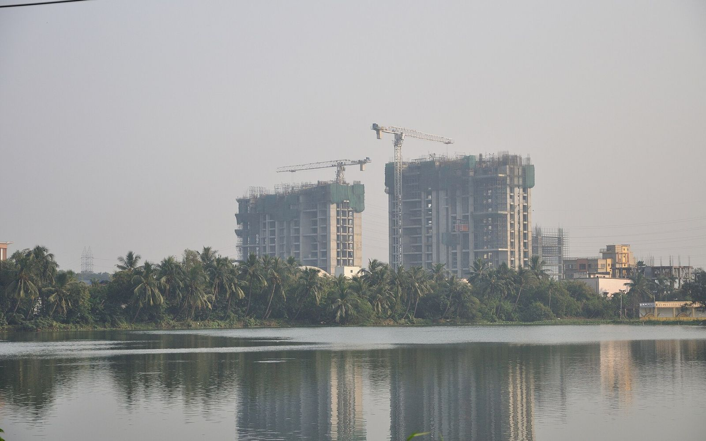
Dec 2013 Mid-rise floors
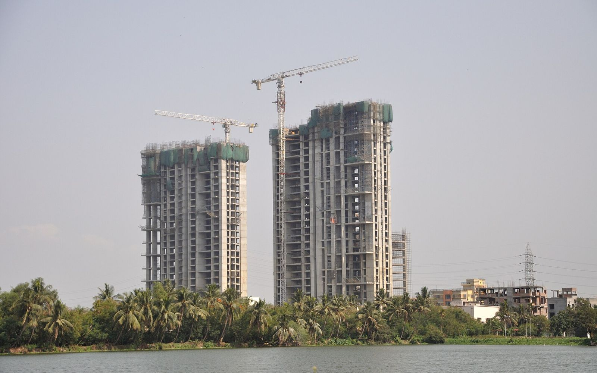
May 2014 Towers climbing
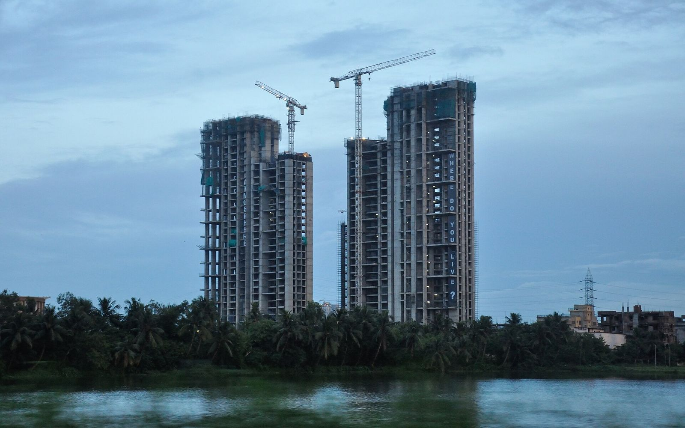
Sep 2014 Upper floorsOct 2014 Near topping out
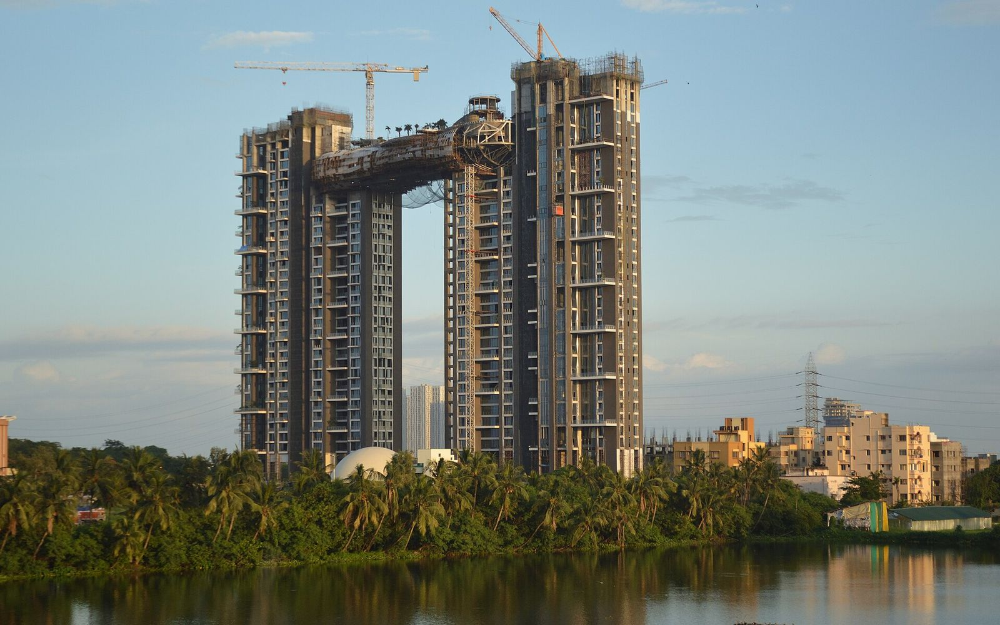
Sep 2016 Structure completeIllustrative photos
Drone time-lapse — 60 seconds
Reserved for a real B&B time-lapse video of a tower from foundation to terrace.
Video to be supplied
05 · Builder testimonials
From the builders we build for
Keya, Adarsh, Brigade, Sumadhura and MVN. The quotes below are written examples to preview the layout — each will be replaced with an approved quote from a named person. Sample testimonials
The floor cycle never slipped once the formwork was on site. Their supervisors knew every pour before it happened.
Project Head, Brigade (sample)Sample testimonial — not a real quote
What stood out was the discipline on safety — nets, permits, toolbox talks — even on the busiest weeks.
Construction Manager, Sumadhura (sample)Sample testimonial — not a real quote
They mobilised a full crew within a fortnight and handed over the structure with a snag list we could actually close.
Director — Projects, Keya (sample)Sample testimonial — not a real quote
Consistent quality from the first floor to the last. The cube results and checklists came to us without asking.
Project Head, Adarsh (sample)Sample testimonial — not a real quote
A family business that behaves like a large contractor, and answers the phone like a small one.
Site Lead, MVN (sample)Sample testimonial — not a real quote
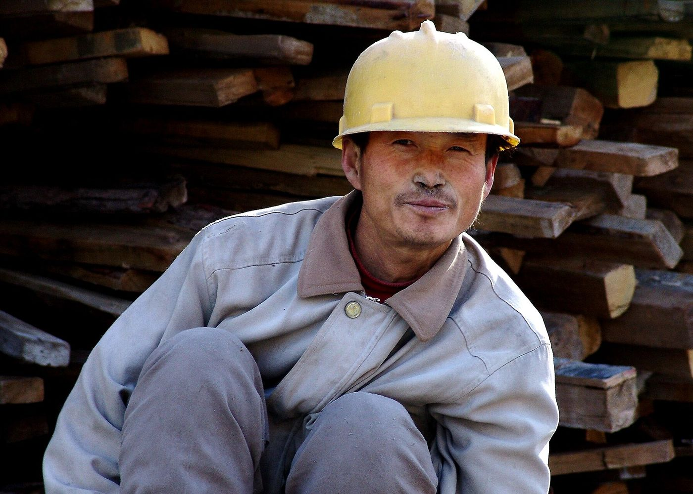
Illustrative photoIllustrative · Photo: Saad Akhtar, CC BY 2.0
06 · Workforce strength
5,000+ people. One standard of care.
Our workforce is our capacity — and our responsibility. How they live, learn and are looked after shows up in every floor they build.
5,000+
Workforce
1,800
Beds in 4 labour camps
Sample data
1,200
Trained Mivan crew
Sample data
100%
ESI & PF enrolment
Sample data
Housing
Purpose-built camps near each site, with ventilated rooms and RO drinking water
Separate family quarters and crèche at larger camps
Daily cleaning, pest control and weekly camp audits
Sample data
Training
5-day induction for every new worker — safety, site rules, first aid
Mivan fixer, bar-bending and shuttering skill programmes
11,500 skill-training hours last year
Sample data
Welfare
Hot meals from site canteens, three times a day
Quarterly health camps; insurance cover for every worker
Wages on time, paid directly to bank accounts
Sample data
07 · Equipment & capacity
Owned, maintained, ready
Owning our formwork and lifting equipment means we can start when the developer is ready, not when the hire yard is. Sample data
Sample data
14
Mivan formwork sets
owned, not hired — ready to mobilise
Sample data
9
Tower cranes
up to 10 t capacity, 60 m jib
Sample data
12
Concurrent projects
run in parallel at full supervision
Sample data
G+32
Tallest structure
handled in Mivan to date
Sample data
6
Concrete pumps
boom & stationary
Sample data
18
Hoists
passenger & material
08 · Quality checks
Checked at every stage
Five gates between raw material and handover. Nothing moves to the next stage until the last one is signed.
01
Material testing
Cement, steel and aggregates accepted only against mill certificates and third-party lab results.
Every batch
02
Cube tests
Concrete cubes cast from every pour and crushed at 7 and 28 days; results shared with the developer.
Every pour
03
Stage inspections
Pre-pour sign-off for formwork alignment, reinforcement, cover blocks and MEP sleeves.
Every floor
04
Snag list
Floor-by-floor walk-through; each snag logged with a photo, an owner and a close-out date.
Every flat
05
Handover checklist
Structure handed over with test records, as-built notes and a closed snag register.
Every tower
Pre-pour checklist
Tower B · Floor 14 · Slab & walls
Sample checklist
✓Formwork panels aligned, plumb within ±3 mm — done
✓Reinforcement as per drawing; cover blocks fixed — done
✓MEP sleeves & conduits placed and tied — done
✓Pins, wedges & props checked by formwork lead — done
✓Cube moulds ready · slump test 100 ± 25 mm — done
Structural engineer sign-off — pending
Developer QA sign-off — pending
5 of 7 completeInspected by: Site QA Engineer (sample)
Developers planning a high-rise, a villa community or a residential tower in Bangalore — share your brief and our team will respond with a considered proposal.